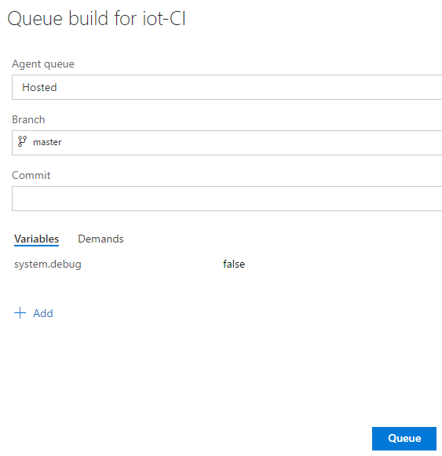
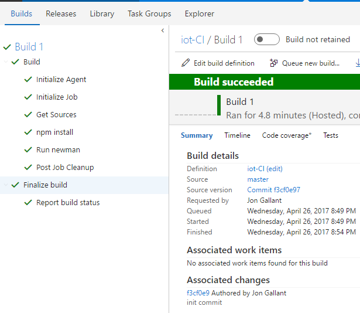

I’ve been doing a lot with Postman lately and have been blogging everything I’ve uncovered along the way. Postman is more than just an ad-hoc REST tester - I believe that the future of REST API documentation will be delivered via Postman. Swagger is a great starting point for API documentation, but it doesn’t give you the full power that Postman does via the “pre-request script” blocks and “tests”. Postman compliments Swagger by adding accompanying code to assist in the execution of your documentions. I like to call this experiment “Executable Documentation”, because in the end, I want to send my users a Postman link that allows them to execute the docs without having to comb through docs and samples. Every uri, body format, header is right there in plain sight in a single location. Super powerful.
If you’ve been following along with my previous Postman posts, or have your Postman Collection exactly the way you want it, you are going to want to run it on a regular basis to ensure it is fully working for your customers at all times. You can use any continuous integration suite to do so. If you want to use Jenkins, you can host Jenkins on Azure and then follow this post to get it configured.
Another great CI option is Microsoft’s Visual Studio Team Services (VSTS) “Build & Release” service.
This post will show you how to setup a VSTS code project and build definition to run your Postman Collections with newman on a regular basis. newman is a server side Postman collection executor.
Setup VSTS Code Project
This is where we will store our Postman collection definition and environment variables file (needed when you run newman) and run our builds.
1. Go to http://visualstudio.com and create a new account if you don’t have one. Everything we do here today should be free (let me know if that is not the case).
2. Create a new account and project. In my case, my account name is ‘azurerest’ and my project name is ‘iot’
3. Clone the repo. Click ‘Code’ tab, click the project, and then click the Clone link in the upper right to find the clone URI.

git clone [your vsts project clone uri]
Export Postman Collection and Environment Variables
You will commit your Postman collection definition file and environment variables to VSTS. You will be committing secrets to source control, but in this case I could not find a good workaround for this because Postman expects a local file for Environment variables. You can control permissions to this repo if you are concerned with the secrets getting exposed - or maybe get Azure Key Vault or Blob Storage into your build process.
Save the following files to the VSTS repo you created earlier.
1. Export Postman Collection by selecting the “…” button on the collection details page and selecting “Export”

2. Export Envrionment Variables by clicking the gear icon, select Manage Environments and then click the Download Environment icon.


Your local repo should now look like this, with both the Postman Collection and the Envrionment Variables file

Push File to VSTS Project
You now need to push the Postman Collection and Environment Variables file to VSTS, so the build process can pick them up.
Execute the following from the repo root:
git add .
git commit -m "Init commit"
git push
You can verify that your files have been pushed to the repo via visualstudio.com
Create VSTS Build Definition
Now we will create the VSTS build definition to execute the collection on a regular basis.
1. Click Build & Release, then click “+ New Definition”
2. Click “empty process” in the middle of the left pane
3. Click “Add Task” and then click the Add button for “npm”

4. Select “npm install” in the build task list and enter “newman -g” into the “arguments” textbox.
5. Click “Add Task” and then click the Add button for “Command Line”

6. Select “Run newman” in the built task list and enter the following into the “arguments” textbox.
run $(Build.SourcesDirectory)\iot.json -e $(Build.SourcesDirectory)\env.json
The first argument is the Postman Collection file and the second argument (-e) is the Environment Variables file.
7. Click the “Save & queue” button to save this build definition.

8. Select the “Hosted” Agent queue and then click the “Queue” button.

You can see the execution details by drilling into the build:
And here’s what success looks like.

Build Schedule
You can now schedule this build via the Build -> Triggers form and also integrate it into your CI process
Example Failure Test Case
As a test, I created a sample that intentionally fails, so you can see that the Postman test cases will also fail the VSTS tests
The request returns a 500 and the test is looking for a 200.
Postman Test Code
var responseJSON;
try {
responseJSON = JSON.parse(responseBody);
tests["Status equals 200"] = responseJSON.status === 200;
}
catch (e) { }
tests["Body contains status"] = responseBody.has("status");
Conclusion
So that’s it. You now have a source controlled Postman collection that is part of your CI process and setup to run on a schedule to suit your needs.
My next post will wrap up everything I’ve learned with Postman and my pitch for using it as an “Executable Documentation” engine.
Jon